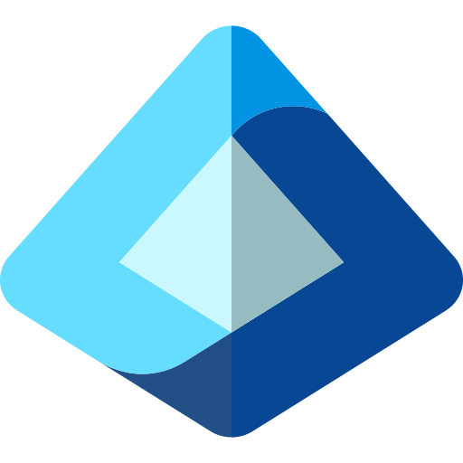

Data & agent sovereignty
Where your data is processed is a design decision, not an afterthought.
AI agents read, reason over, and act on sensitive data. We make sure that processing is located, controlled, and audited the way Canadian organizations need.
Toronto, Ontario. Primary region for Fabric capacity, storage, and agent services.
Quebec City, Quebec. Paired region for resilience and disaster recovery within Canada.
We confirm service and model availability in Canadian regions for each workload before design is final, and tell you plainly where a feature is not available.
Data residency
Fabric capacities and OneLake are created in the Canadian region you choose. Cross-region features are off unless you approve them.
Agent and model processing
Agents are deployed in Canadian regions where the required models are available. Where they are not, we document the options and let you decide.

Identity and access
Entra ID, Conditional Access, and managed identities. Agents act with the user's rights or their own least-privilege identity.
Classification and DLP
Sensitivity labels, data loss prevention, and lineage so agents cannot surface what a user should not see.
Threat protection
Defender monitoring, secure-by-default networking, and red-team style tests against prompt injection.
Keys and networking
Private endpoints, managed virtual networks, and customer-managed keys in Azure Key Vault where required.
We design to support Canadian privacy obligations such as PIPEDA and provincial requirements. Regulatory and contractual compliance depends on your configuration and use, and is confirmed with your privacy and legal teams during the engagement. Service and model regional availability changes; we verify it at design time.
Our approach
A sovereignty review before the first agent ships.
Every engagement starts with a short data and agent residency review, so you know exactly where data lives, who and what can reach it, and what is logged.
- ClassifyIdentify sensitive data and the policies that apply.
- LocatePin storage, compute, and model processing to Canadian regions.
- RestrictIdentity, network, and permission boundaries for people and agents.
- ProveEvaluation, logging, and audit evidence you can show your stakeholders.
Start with what matters
Tell us the data problem.
We'll show you the agent.
A 30-minute discovery call with a senior engineer: your sources, your security constraints, and the first workload worth shipping on Fabric and AI Foundry.